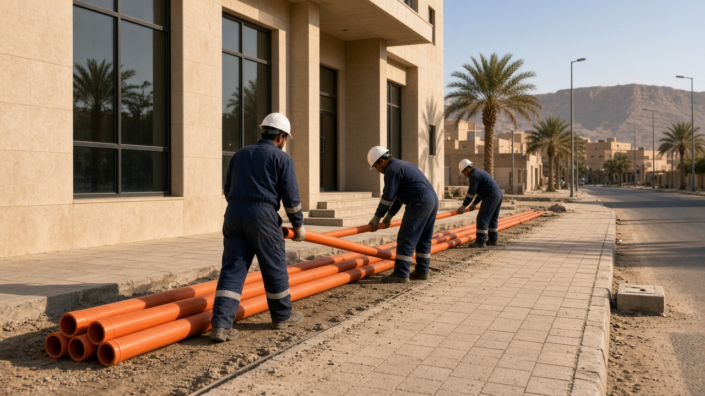

المشاريع / وكالة التحول الرقمي / HL-2025-004
وكالة التحول الرقمي · إدارة البنية التحتية الرقمية
شبكة الألياف لمباني الأمانة
ربط المباني البلدية والمراكز بشبكة ألياف بدل الدوائر المتفاوتة السرعة.

وصف المشروع
اكتمل المسح والتصميم للمبنى الرئيسي ومراكز المصيف، وتعثر توريد معدات الربط في ثلاثة مواقع. بدون هذه الشبكة تتأثر مشاريع التطبيقات والمراقبة.
سجل التحديثات
-
58٪
المسح مكتمل، والتوريد متوقف في ثلاثة مواقع بانتظار قرار الاستكمال.
الموقع
حي المصيف · 27.4938 , 41.6672